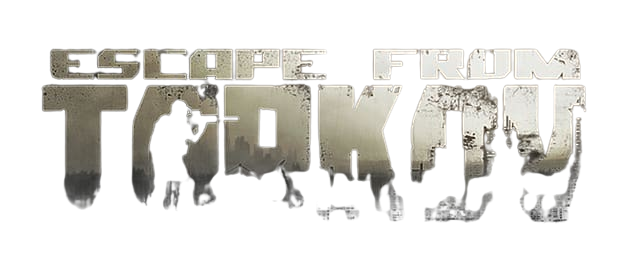

Changes:
Secure container Kappa will be easier to obtain;
Seasonal PvP characters will be added;
Seasonal PvP Battle Pass will be added;
Many new items will be added (for example guns);
Many more things!;
Go Back